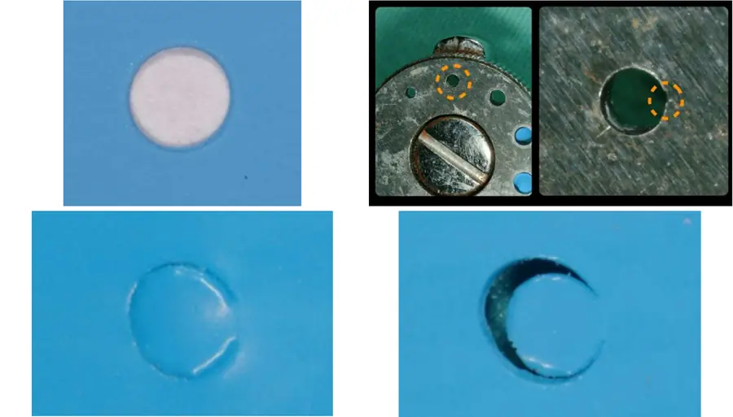

نسخه استخراجشده؛ ترجمه یا تأیید علمی انجام نشده است. وضعیت: captured
دستیار ورق سوراخشده را به تو میدهد. وقتی آن را جلوی نور میکشی، کنار دو سوراخ زبانهی کوچکی از ورق آویزان است و لبهی یک سوراخ دیگر بریدگی دارد. دستیار میگوید: «زبانهها را با دست میکَنم.» با این ورق کار میکنی؟

سوراخ خوب کاملاً گرد است و لبهاش صاف. هر ناهمواری لبه دو مشکل میسازد:
کندن زبانه با دست یا قیچی لبه را ریشریش میکند و ورق باز هم پاره میشود. ورق را کنار بگذار، علت را در پانچ پیدا کن و ورق تازه سوراخ کن. صفحهی آسیبدیده را باید عوض کرد؛ سازندهی پانچ آن را جایگزین میکند.
نکتهی طلایی: الگو و مهر جای میانگین دندانها را نشان میدهند، نه دهان این بیمار را. پیش از پانچ قوس بیمار را نگاه کن و برای دندان جابهجا سوراخ را جابهجا کن و برای دندان غایب سوراخ نزن.